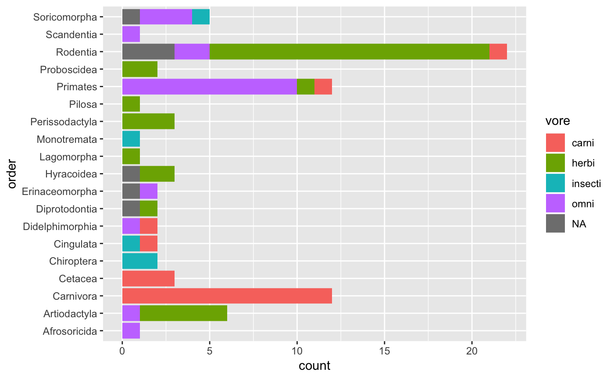
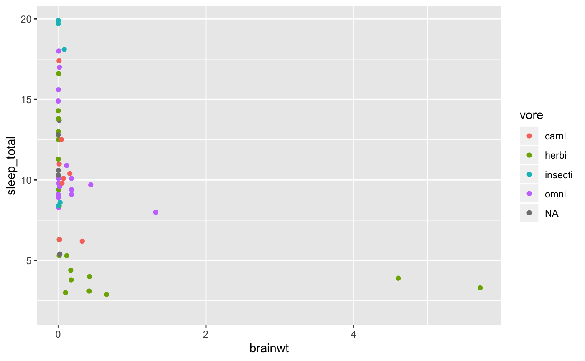
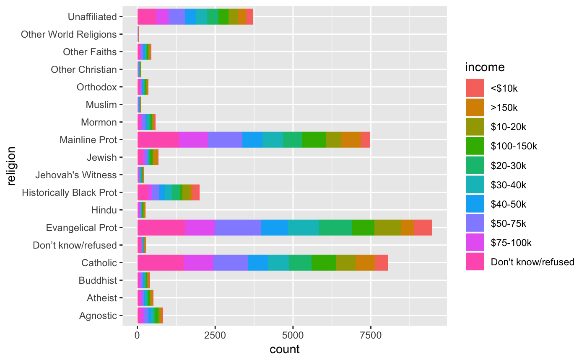

vignettes/data-the-tidy-and-the-untidy.Rmd
data-the-tidy-and-the-untidy.RmdIn this vignette I will introduce the notion of ‘tidy’ data. I will provide an example dataset for both tidy format and ‘untidy’ format. The goal is to help you understand what it means for a dataset to be tidy, why this is a conducive format for data analysis, and some basic operations to convert untidy datasets into tidy datasets.
Let’s attach the packages we will need for this vignette. If you do not have a package, use the RStudio interface, or the following command, to install it before continuing.
library(tidyverse) # core packages
#> ── Attaching packages ───────────────────────────────────────────────────────────────────── tidyverse 1.2.1 ──
#> ✔ ggplot2 3.1.0 ✔ purrr 0.3.0
#> ✔ tibble 2.0.1 ✔ dplyr 0.7.8
#> ✔ tidyr 0.8.2 ✔ stringr 1.3.1
#> ✔ readr 1.3.1 ✔ forcats 0.3.0
#> Warning: package 'tibble' was built under R version 3.5.2
#> Warning: package 'purrr' was built under R version 3.5.2
#> ── Conflicts ──────────────────────────────────────────────────────────────────────── tidyverse_conflicts() ──
#> ✖ dplyr::filter() masks stats::filter()
#> ✖ dplyr::lag() masks stats::lag()
library(rio) # import/export
library(datasets) # a package of toy datasetsThe data frame is the fundamental data structure for organizing data for analysis in R. A data frame in essence is just a collection of vectors of the same length. Each of these vectors will be of a single type (i.e. character, factor, integer, logical, etc.) corresponding to the type of information contained in each vector.
But when we conduct research the relationships between the vectors in the data.frame matter. Each row should correspond to an observation and each column an attribute of each observation. This is what is known as a ‘tidy’ dataset.
Let’s make use of some data that is made available by default in R. Specifically we’ll take a look at the msleep dataset, a dataset containing the sleep times and weights of various mammals. Let’s get a sense of what that data look like with glimpse().
glimpse(msleep) # view the data
#> Observations: 83
#> Variables: 11
#> $ name <chr> "Cheetah", "Owl monkey", "Mountain beaver", "Greate…
#> $ genus <chr> "Acinonyx", "Aotus", "Aplodontia", "Blarina", "Bos"…
#> $ vore <chr> "carni", "omni", "herbi", "omni", "herbi", "herbi",…
#> $ order <chr> "Carnivora", "Primates", "Rodentia", "Soricomorpha"…
#> $ conservation <chr> "lc", NA, "nt", "lc", "domesticated", NA, "vu", NA,…
#> $ sleep_total <dbl> 12.1, 17.0, 14.4, 14.9, 4.0, 14.4, 8.7, 7.0, 10.1, …
#> $ sleep_rem <dbl> NA, 1.8, 2.4, 2.3, 0.7, 2.2, 1.4, NA, 2.9, NA, 0.6,…
#> $ sleep_cycle <dbl> NA, NA, NA, 0.1333333, 0.6666667, 0.7666667, 0.3833…
#> $ awake <dbl> 11.9, 7.0, 9.6, 9.1, 20.0, 9.6, 15.3, 17.0, 13.9, 2…
#> $ brainwt <dbl> NA, 0.01550, NA, 0.00029, 0.42300, NA, NA, NA, 0.07…
#> $ bodywt <dbl> 50.000, 0.480, 1.350, 0.019, 600.000, 3.850, 20.490…We see that there are 83 observations and 11 variables. Each variable corresponds to an attribute of the specific animal. We see that there are 5 categorical variables and 6 continuous variables. It is also apparent that there is some missing data, which is represented with NA or <NA> values depending on the variable type (categorical or continuous). It is not uncommon to have missing values in various cells of a dataset, for now it is just worth noting how they are represented in the data.
We can also see the data in a more standard tabular format by typing the name of the dataset in the Console.
msleep # tabular view of the data
#> # A tibble: 83 x 11
#> name genus vore order conservation sleep_total sleep_rem sleep_cycle
#> <chr> <chr> <chr> <chr> <chr> <dbl> <dbl> <dbl>
#> 1 Chee… Acin… carni Carn… lc 12.1 NA NA
#> 2 Owl … Aotus omni Prim… <NA> 17 1.8 NA
#> 3 Moun… Aplo… herbi Rode… nt 14.4 2.4 NA
#> 4 Grea… Blar… omni Sori… lc 14.9 2.3 0.133
#> 5 Cow Bos herbi Arti… domesticated 4 0.7 0.667
#> 6 Thre… Brad… herbi Pilo… <NA> 14.4 2.2 0.767
#> 7 Nort… Call… carni Carn… vu 8.7 1.4 0.383
#> 8 Vesp… Calo… <NA> Rode… <NA> 7 NA NA
#> 9 Dog Canis carni Carn… domesticated 10.1 2.9 0.333
#> 10 Roe … Capr… herbi Arti… lc 3 NA NA
#> # … with 73 more rows, and 3 more variables: awake <dbl>, brainwt <dbl>,
#> # bodywt <dbl>Some of the variable names may not be altogether transparent, so let’s take a look at the data dictionary with ?msleep. After running this command in the Console you will get a help page with a description of the dataset.
Since each row is an observation and each column an attribute of the data we have a tidy dataset. And at this point we could start an exploration of the data by creating table or plot summaries of the data. For example, we might be interested in finding out the how many types of vore there are and how many of each type there are.
msleep %>%
count(vore, sort = TRUE) %>% # count `vore` and sort ascending
head() # only show the top 5 rows
#> # A tibble: 5 x 2
#> vore n
#> <chr> <int>
#> 1 herbi 32
#> 2 omni 20
#> 3 carni 19
#> 4 <NA> 7
#> 5 insecti 5Herbivores are the most common and insectivores the least common. We can also do a cross-tabulation of vore and order.
msleep %>%
count(vore, order, sort = TRUE) %>% # count `vore` by `order` and sort
head() # top 5 rows
#> # A tibble: 6 x 3
#> vore order n
#> <chr> <chr> <int>
#> 1 herbi Rodentia 16
#> 2 carni Carnivora 12
#> 3 omni Primates 10
#> 4 herbi Artiodactyla 5
#> 5 carni Cetacea 3
#> 6 herbi Perissodactyla 3This table summary might start to get a little unwieldy, so a graphical approach may be in order.
msleep %>%
ggplot(aes(x = order, fill = vore)) + # map `order` to x, and `vore` as fill for the bars
geom_bar() + # visualize as a bar plot
coord_flip() # flip the x/y axes to better display `order` names
When working with relationships where we are working with one or more continuous variables, scatterplots are a good first choice for visualizing the data. Let’s take a look at the relationship between sleep_total and bodywt and add the vore status as another attribute.
msleep %>%
ggplot(aes(x = brainwt, y = sleep_total, color = vore)) + # map x and y and add a color layer to the plot for `vore`
geom_point() # visualize as a scatterplot
#> Warning: Removed 27 rows containing missing values (geom_point).
Now let’s read some data from the Pew Research Center on religion and income.
Now let’s take a look at the data.
glimpse(pew)
#> Observations: 18
#> Variables: 11
#> $ religion <chr> "Agnostic", "Atheist", "Buddhist", "Catholi…
#> $ `<$10k` <int> 27, 12, 27, 418, 15, 575, 1, 228, 20, 19, 2…
#> $ `$10-20k` <int> 34, 27, 21, 617, 14, 869, 9, 244, 27, 19, 4…
#> $ `$20-30k` <int> 60, 37, 30, 732, 15, 1064, 7, 236, 24, 25, …
#> $ `$30-40k` <int> 81, 52, 34, 670, 11, 982, 9, 238, 24, 25, 6…
#> $ `$40-50k` <int> 76, 35, 33, 638, 10, 881, 11, 197, 21, 30, …
#> $ `$50-75k` <int> 137, 70, 58, 1116, 35, 1486, 34, 223, 30, 9…
#> $ `$75-100k` <int> 122, 73, 62, 949, 21, 949, 47, 131, 15, 69,…
#> $ `$100-150k` <int> 109, 59, 39, 792, 17, 723, 48, 81, 11, 87, …
#> $ `>150k` <int> 84, 74, 53, 633, 18, 414, 54, 78, 6, 151, 6…
#> $ `Don't know/refused` <int> 96, 76, 54, 1489, 116, 1529, 37, 339, 37, 1…The dataset contains 18 observations and 11 variables. Let’s preview the tabular output.
pew
#> # A tibble: 18 x 11
#> religion `<$10k` `$10-20k` `$20-30k` `$30-40k` `$40-50k` `$50-75k`
#> <chr> <int> <int> <int> <int> <int> <int>
#> 1 Agnostic 27 34 60 81 76 137
#> 2 Atheist 12 27 37 52 35 70
#> 3 Buddhist 27 21 30 34 33 58
#> 4 Catholic 418 617 732 670 638 1116
#> 5 Don’t k… 15 14 15 11 10 35
#> 6 Evangel… 575 869 1064 982 881 1486
#> 7 Hindu 1 9 7 9 11 34
#> 8 Histori… 228 244 236 238 197 223
#> 9 Jehovah… 20 27 24 24 21 30
#> 10 Jewish 19 19 25 25 30 95
#> 11 Mainlin… 289 495 619 655 651 1107
#> 12 Mormon 29 40 48 51 56 112
#> 13 Muslim 6 7 9 10 9 23
#> 14 Orthodox 13 17 23 32 32 47
#> 15 Other C… 9 7 11 13 13 14
#> 16 Other F… 20 33 40 46 49 63
#> 17 Other W… 5 2 3 4 2 7
#> 18 Unaffil… 217 299 374 365 341 528
#> # … with 4 more variables: `$75-100k` <int>, `$100-150k` <int>,
#> # `>150k` <int>, `Don't know/refused` <int>Considering our ‘tidy’ dataset definition, what is wrong with the following data frame?
How should this data ideally be structured for tidy-style analysis?
The basic problem here is that our data is a summary of religion and various levels of income. So in essence, we really only have two variables, religion and income. The gather() function will allow us to effectively group the income levels into one column (income). We exclude the religion column.
pew_tidy_sum <-
pew %>%
gather(income, count, -religion)
pew_tidy_sum
#> # A tibble: 180 x 3
#> religion income count
#> <chr> <chr> <int>
#> 1 Agnostic <$10k 27
#> 2 Atheist <$10k 12
#> 3 Buddhist <$10k 27
#> 4 Catholic <$10k 418
#> 5 Don’t know/refused <$10k 15
#> 6 Evangelical Prot <$10k 575
#> 7 Hindu <$10k 1
#> 8 Historically Black Prot <$10k 228
#> 9 Jehovah's Witness <$10k 20
#> 10 Jewish <$10k 19
#> # … with 170 more rowsThe real number of observations is still not transparent as we still have counts for each of the combinations of religion and income. To find out how many observations where made we can sum the counts. We can see how many true observation there are by summing the count column.
We can unsummarize this data into individual observations with uncount().
pew_tidy_ind <- uncount(pew_tidy_sum, count)
pew_tidy_ind
#> # A tibble: 35,556 x 2
#> religion income
#> <chr> <chr>
#> 1 Agnostic <$10k
#> 2 Agnostic <$10k
#> 3 Agnostic <$10k
#> 4 Agnostic <$10k
#> 5 Agnostic <$10k
#> 6 Agnostic <$10k
#> 7 Agnostic <$10k
#> 8 Agnostic <$10k
#> 9 Agnostic <$10k
#> 10 Agnostic <$10k
#> # … with 35,546 more rowsWe see that the dataset now has a row for each observation, as a tidy dataset should.
We can now summarize the data in any way we see fit.
pew_tidy_ind %>%
count(religion, sort = TRUE)
#> # A tibble: 18 x 2
#> religion n
#> <chr> <int>
#> 1 Evangelical Prot 9472
#> 2 Catholic 8054
#> 3 Mainline Prot 7470
#> 4 Unaffiliated 3707
#> 5 Historically Black Prot 1995
#> 6 Agnostic 826
#> 7 Jewish 682
#> 8 Mormon 581
#> 9 Atheist 515
#> 10 Other Faiths 449
#> 11 Buddhist 411
#> 12 Orthodox 363
#> 13 Don’t know/refused 272
#> 14 Hindu 257
#> 15 Jehovah's Witness 215
#> 16 Other Christian 129
#> 17 Muslim 116
#> 18 Other World Religions 42
pew_tidy_ind %>%
count(income, sort = TRUE)
#> # A tibble: 10 x 2
#> income n
#> <chr> <int>
#> 1 Don't know/refused 6121
#> 2 $50-75k 5185
#> 3 $75-100k 3990
#> 4 $20-30k 3357
#> 5 $30-40k 3302
#> 6 $100-150k 3197
#> 7 $40-50k 3085
#> 8 $10-20k 2781
#> 9 >150k 2608
#> 10 <$10k 1930Or we can visualize the relationships with plots.
